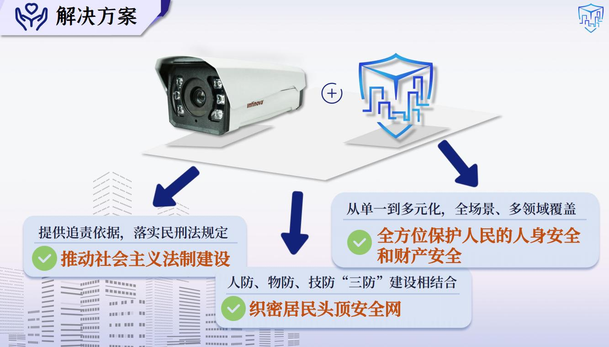

HaMonitorSentry 是专为高层建筑和人群密集区设计的高级智能安防系统。该系统结合高分辨率、高帧率摄像技术和双角度监测策略，适用于智慧安防、智慧社区和智能建筑等行业，致力于与物业、企业、政府合作，以保障公民的生命和财产安全。

我们立足于 智慧安防、智慧社区、智能建筑 等国家新兴技术赋能行业，应用于 高空抛物 和 高层危险行为监测 等各类场景，致力于保障公民的生命财产安全。

当前市面上现有的高层监测设备大多功能狭窄、数据不全、场景局限、监测欠佳。无法满足智能安防的要求！无法全方位保护人民生命财产安全! 因此，我们迫切需要可以提供足够威慑力、监督民众违法行为、保障民众生命财产安全的高层智能监测系统。
与现有产品对比，我们更是将多算法相互结合，功能全面，在高层智能监测领域独具优势。

系统的第一个核心是高空抛/坠“物”监测。我们采用了 Panoptic FPN ResNet-101 语义分割技术 提取建筑物背景并使用类间距离蒸馏，同时对运动对象进行去噪处理。引入 MA 模块，加速信息流动效率，使高空抛物检出率稳定在 65% 以上，误报率小于 15%，理想情况下检出率可达 95%，误报率小于 5%。

第二个核心是高层建筑物边缘侧“人”的危险行为监测。我们在同一个网络中融合时序信息和空间信息，捕捉视频中的动态行为和时间依赖特征，通过多头注意力和前馈网络处理，使人体检测率大于 70%，行为及危险系数确认误识率小于 15%，理想情况下检测率可达 95%，误报率小于 5%。

我们构建了高空抛物检测原创数据集，涵盖多个场景、多种抛物类别；以及高层危险行为原创数据集，同样涉及多个场景、多个动作类别。


我们的系统坚持从双重监测角度出发，同时实现一体化通信和数据治理的交叉融合。


目前基于本作品已落实1项专利、3项软著、1篇学术论文以及2个原创数据集。
本作品由深圳英飞拓智能技术有限公司提供硬件支持，促进应用研发过程。计划将该系统应用于深圳湾超级总部基地及其他多个园区，实现落地试点，带来广泛的社会效益和显著的科技示范效益。


git clone https://github.com/mumuyeye/HaMonitorSentry.git
cd HaMonitorSentry
conda env create -f environment.yml
conda activate sentry
# 创建字体目录（如果尚未存在）
mkdir -p ~/.local/share/fonts
# 复制字体文件
cp /root/sentry/HaMonitorSentry/MSYH.TTF ~/.local/share/fonts/
# 更新字体缓存
fc-cache -fv
# 验证字体是否安装成功
fc-list | grep "MSYH"
如需下载 HaMonitorSentry 所使用的数据集示例，访问 百度网盘链接
并使用提取码 2333 进行下载。
python demo.py